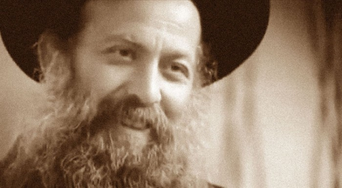
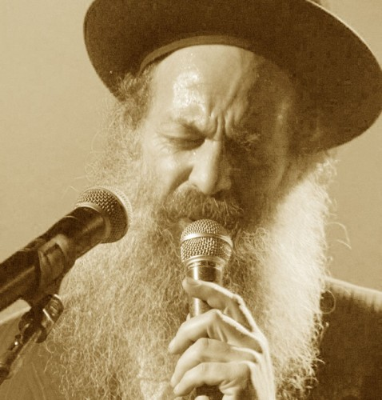

Актер фильма "УШПИЗИН" - о своих поисках веры
Некогда очень известный светский артист, ныне бреславский хасид, он один из самых популярных музыкантов, чьи песни поднимаются на самые высокие места в израильских хит-парадах. Если вы смотрели фильм «УШПИЗИН» (прием гостей), то, конечно, полюбили и запомнили исполнителя главной роли этого фильма (он же автор сценария) Шули Ранд.
 Некогда очень известный светский артист, сейчас, когда он вернулся к вере (ныне бреславский хасид), он один из самых популярных музыкантов (автор и исполнитель), чьи песни поднимаются на самые высокие места в израильских хит-парадах и перепеваются многими светскими исполнителями.
Некогда очень известный светский артист, сейчас, когда он вернулся к вере (ныне бреславский хасид), он один из самых популярных музыкантов (автор и исполнитель), чьи песни поднимаются на самые высокие места в израильских хит-парадах и перепеваются многими светскими исполнителями.
Предлагаем вашему вниманию интервью с Шули «Истории из жизни», где он делится своими поисками веры.
См. источник (видео на иврите + титры на англ.). Перевод с ивр.: Э.Калиш
***

из песни: вообще не понимаю, как нам пришла в голову такая идея – начать без молитвы?
«Рибоно шель Олам (Властитель мира), если говорить откровенно, иногда у меня нет сил жить в Твоем мире» - очень известная его песня, где он общается со Всевышним попросту, искренне, как общаются с близким тебе человеком. Слушайте эту песню здесь:
Также как счастье – это не что-то статичное, так же и вера – не статична, и религия – не статична. Это каждодневная война. Есть и спады, есть и периоды лучшие, более ясные, чтобы развиваться, достигать более глубокого понимания, новой ступени, человек должен проходить определенные периоды спадов (еридот). Хазара бе тшува (обращение (на ивр. буквально – возвращение к ответу) – это не пикник, это сложная работа, как и вся жизнь и путешествие по ней. Это не то, что ты отрастил бороду, нацепил шляпу и закончено на этом. То, что внутри – здесь твоя война.
из песни: «голоса из прошлого шепчут мне, чтоб я остановился, но я продолжаю продвигаться вперед даже во тьме».
 Я вырос в доме, где культуре придавалось большое значение. Но до восемнадцати лет все еще учился в ешивах (иудейские религиозные учебные заведения).
Я вырос в доме, где культуре придавалось большое значение. Но до восемнадцати лет все еще учился в ешивах (иудейские религиозные учебные заведения).
Когда начался этот процесс ухода от религии, это не было чем-то рациональным. Я не стану врать, будто я не получил каких-то ответов на философские вопросы. Во мне были сильны инстинкты, бурлящая, пытливая душа с самого юного возраста. Процесс моего ухода от веры начался в весьма юном возрасте. И тогда пошел в армию и там я уже не был религиозным. Затем пошел учиться театральному мастерству. Стал актером со всеми сопутствующими делами. И уже после многих лет работы в театре со мной стало происходить нечто… В общем-то есть разные пути обращения к вере. Некоторые приходят к вере после травмы, некоторые в результате откровения или просветления. У меня это было капля за каплей, очень постепенно.
Двадцать пять лет назад Ури Зоар (очень популярный некогда в Израиле комедийный артист) вернулся к вере. В то время понимание было таким, что в результате обращения человека к вере должна произойти полная смена личности. Это означает: разрушь то, чем ты был до сих пор – Ури Зоар, Шули Ранд и т.д. теперь его не существует. Ты должен построить новую личность. И эта новая личность должна вжиться в общество.
Волна обратившихся к вере через опыт открыла новый подход. Подход этот заключался в том, что полное растворение, полный отказ от своей прежней личности подходит далеко не всем и не станет для них полезным. Новый подход гласит: ты не должен отказываться от того, кто ты есть, от своей личности, но сверх того ты должен построить нечто, исходящее из твоих новых религиозных ценностей, приоритетов. Твое прежнее не нужно уничтожать, но оно должно быть освещено. (От редактора: Ури Зоар после обращения (хазара бе тшува) полностью отказался от своей артистической карьеры. В противоположность ему Шули Ранд пишет сценарии, снимается в кино, пишет стихи и музыку и сам же их исполняет).
Я думаю, что это новый вид иудаизма. Думаю, культура, искусство - очень хороший путь для устроения взаимоотношений, связей между людьми. Скажем, опыт развития диалога между религиозной частью общества и светской часто стопорится из за политических вопросов, или каких-то разногласий: Почему они не служат в армии? Почему они делаю то или иное? И диалог останавливается, даже не достигнув сущностных вопросов. И это становится препятствием в продвижении. А культура, творчество помогает перепрыгнуть это. Потому что люди, в общем-то, ищут общения и хотят разговаривать. Искусство помогает перешагнуть через второстепенное, несущественное и перейти непосредственно к значимому, к сути вопроса.
Я понимаю иудаизм – это СВЯЗЬ с Кадош Барух hу, со Святым, да будет Он благословен. И это вера в Него и Его заповеди. Это, возможно, звучит банально. Но правда иногда выглядит банальной. Так я понимаю свою связь с иудаизмом.

Если ты спросишь меня о том, что более всего беспокоит меня (думаю, что и Самого Бога), что Его дети ненавидят один другого, будучи не способными на диалог. Я бы хотел, чтобы этот мир больше верил Всевышнему. Чтобы было больше веры. Чтобы уровень веры возрос. Это очень порадовало бы меня.
Аркадий Духин и Шули Ранд "Врата слез"
Эфраим Калиш: Шули говорит об очень важной задаче искусства - примирять, говорить на таком языке, который позволяет перешагнуть над несущественным, ведь именно на нем мы часто спотыкаемся и останавливаемся. Именно несущественное становится порой непреодолимой преградой на пути к диалогу. Искусство создает возможность концентрироваться на существенном и действительно важном, сущностном.
Еще одна вещь, меня поразившая, - его музыкальное иудейство, о котором он помнил постоянно, даже уходя весьма далеко и становясь совершенно светским. Это как магнит, как запах благовоний во время церемонии авдалат-шаббат (отделение субботы от пр. дней). И этот запах всю неделю влечет к новой встрече в шаббат, постоянно напоминая сладость присутствия Всевышнего. Так мелодии его иудейства напоминали ему нечто, были своего рода ци-цит (с голубой небесной ниткой ДЛЯ НАПОМИНАНИЯ о Небе). Значит дом его родителей был не сухим собранием законнических мицвот, а приправленным творчеством - благовонием и радостью переживания встречи.